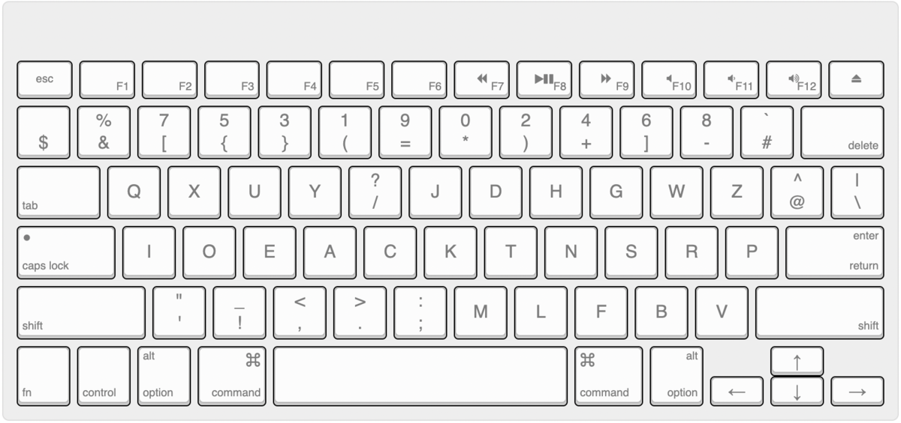

先日Astarte+からAstarte配列に乗り換える計画を立てていたのだけれど、実際に練習してみるとやはり打ちづらいので、Astarte+に戻すことにした。
ただ、練習過程で一つ問題が。Programmer Dvorakの記号を適用したために長音（ー）の位置が変わってしまい、そのせいで長音が打ちづらいということに気づく。
そこで試しに「！」と「ー」を入れ替え、以下のような配列でしばらく練習してみることにする。

「ー」はQwertyと同じで違和感はないけれど、「！」マークがこの位置にある配列というのは自分は見たことがないのでだいぶ違和感がある気もする。ただ元々xがあった位置だと考えると使用頻度的には悪くないのかもしれない。「？」が左手側にあることと共通点はないわけではないし、しばらく様子見してみることにしよう。
現時点で確定とはいえないけれど、Programmer Astarte++（【追記】v0.1）と仮称した上で各種設定ファイルは以下。
ただ、変更して少し打ってみた感じでは、Programmer Astarteの方が正直打ちやすい気もしてきたので、しばらく試行錯誤は続く予感。